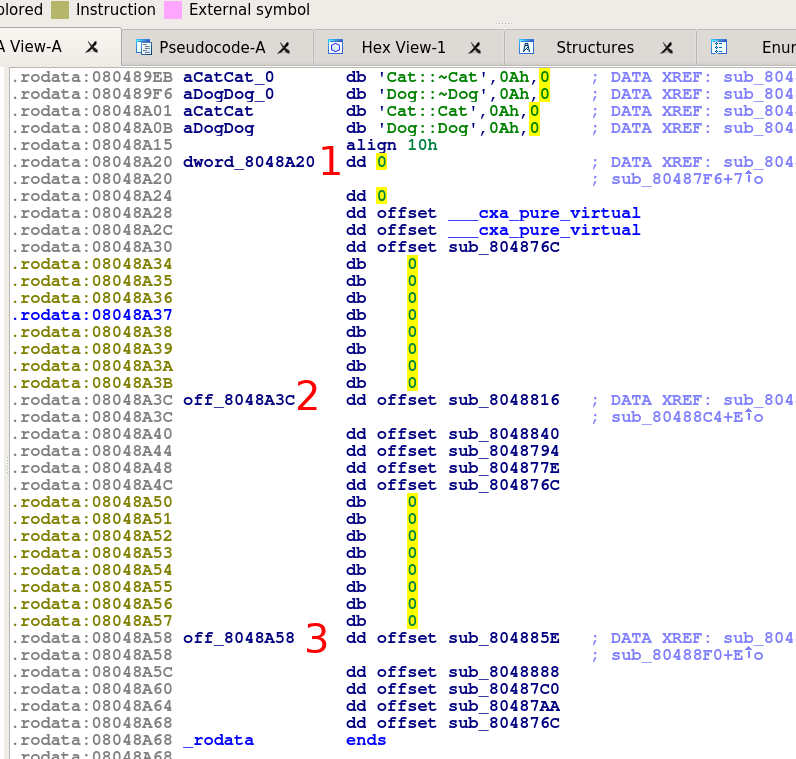
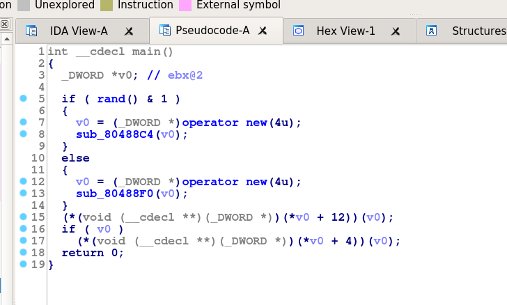
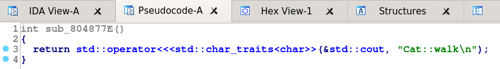
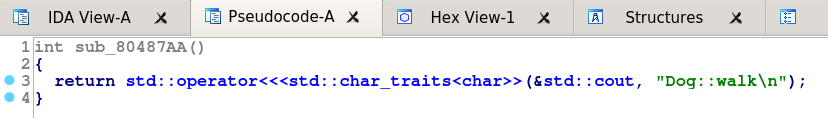
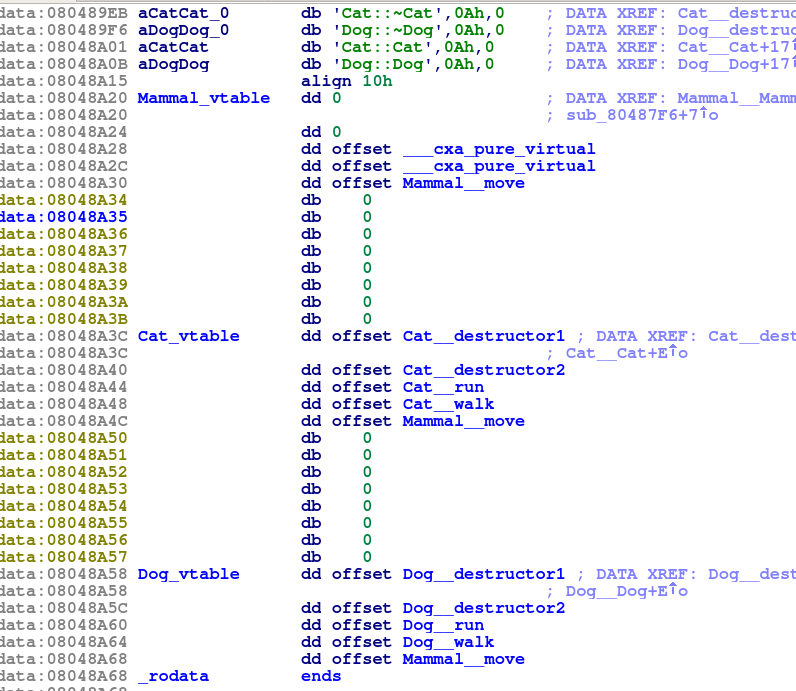
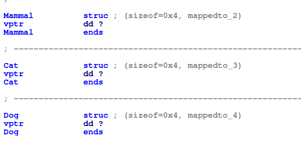
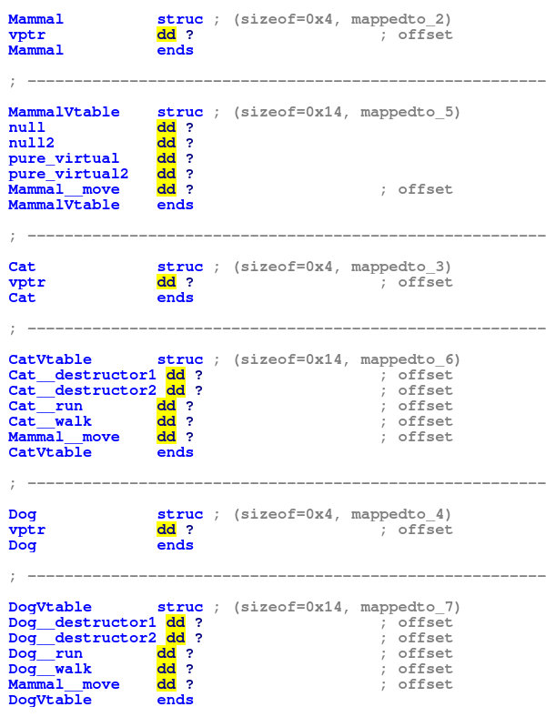
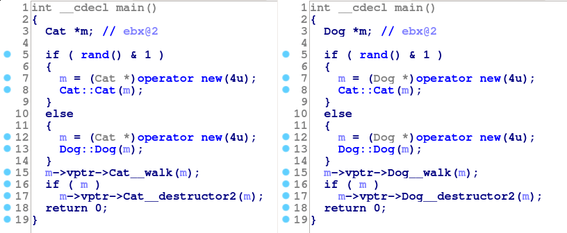
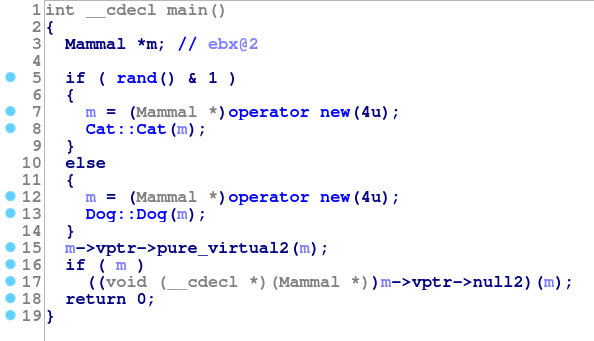

Reversing C++ Virtual Functions: Part 1
There are a few posts in various parts of the internet discussing reverse engineering C++, and these often address virtual functions to a large or small extent. However, I wanted to take some time to write about dealing with virtual functions in large, ‘enterprisy’ code-bases. These can often include thousands of classes and massive type hierarchies, so I think it is worth describing some techniques for reversing them. But before that I’m going to go through some more simple cases. If you are already familiar with virtual function reversing, then you my want to proceed directly to part 2.
It’s also worth noting the following:
- The code was compiled without RTTI (RTTI will be discussed later) and without exceptions
- I’m using 32bit x86 as the example platform
- The binaries have been stripped
- Most virtual function implementation details are not standardized and can vary from compiler to compiler. For this reason, we’re going to focus on the behavior of GCC.
So in general, the binaries we’re looking at have been compiled with g++ -m32 -fno-rtti -fnoexceptions -O1 file.cpp and then stripped with strip.
The Goal
In most cases, we cannot hope to “devirtualize” a virtual function call. The information needed to do that is just not present until runtime. Instead, the goal of this exercise will be to determine which function might be being called at a particular point. In later parts we will focus on narrowing down the possibilities.
The Basics
I’m assuming that you are familiar with writing C++ but maybe not with its implementation. So, let’s start by looking at how the compiler implements virtual functions. Suppose we have the following classes:
And we have some code that uses them:
Of course whether m is a Cat or Dog depends on the output of rand. The compiler cannot know this ahead of time, so how does it call the right function? The answer is that for each type having a virtual function, the compiler inserts a table of function pointers called a vtable into the resulting binary. Each instance of such a type is given an additional member called a vptr that points to the correct vtable for that object. Code to initialize this pointer with the right value will be added to the constructor.
Then, when the compiler needs to call a virtual function, it can just access the correct entry in the vtable for the object and call that. This means that the entries in the table must be in the same order for each related type (each class’s run could be at index 1, every walk at index 2, etc).
So we would expect to find three tables in the binary for Mammal, Cat and Dog. We can locate them quickly by looking through .rodata for adjacent function offsets:

What about the main function? It decompiles to:

We can see that 4 bytes are being allocated in either branch. This makes sense, as the only data in the structure is the vptr added by the compiler. We can also see the virtual function calls on lines 15 and 17. In the first, the compiler is dereferencing (to get the vptr) and adding 12 to access the 4th entry in the vtable. Line 17 gets the 2nd entry in the table. The program then calls the function pointer it retrieved from the table.
 
Looking back at the tables, the 4th entries are sub_80487AA, sub_804877E, and ___cxa_pure_virtual. If we look at the bodies of the two “sub_” functions we see that they are the definitions of walk for Dog and Cat (shown in the pictures). By elimination, the ___cxa_pure_virtual function must belong to the vtable for Mammal. This makes sense, as Mammal has no definition of walk, and these “pure_virtual” entries are inserted by GCC when a function is (unsurprisingly) purely virtual. So, table 1 must be for Mammal objects, 2 is for Cats and table 3 is for Dogs.
But it is seems strange that there are 5 entries in each vtable when there are only 4 virtual functions in play:
runwalkmove- the destructors
The additional entry is an ‘extra’ destructor. This is here because GCC will insert multiple destructors that are used in different circumstances. The first of these will simply destroy the members of the object. The second will also delete the memory that was allocated for the object (this is the version called in the example in line 17). In some cases there may be a 3rd version that is used in certain virtual-inheritance circumstances.
By looking back at the contents of the ‘sub_’ functions, we find the layout of the vtables are as follows:
| Offset | Pointer to |
|--------+-------------|
| 0 | Destructor1 |
| 4 | Destructor2 |
| 8 | run |
| 12 | walk |
| 16 | move |
However, notice that the first two entries in the Mammal table are zero. This is an eccentricity of newer versions of GCC. The compiler will replace the destructor entries with NULL pointers in classes that have a pure-virtual method (i.e., classes that are abstract).
With all this in mind, let’s do some renaming. Afterwards we’re left with:

Notice that because neither Cat nor Dog implemented move, they both inherited the definition from Mammal and so the move entries in their vtables are the same.
Structures
At this point is useful to start defining some structures. We’ve already seen that the only member of the Mammal, Cat, and Dog structures will be their vptrs. So we can define these quickly:

The next step is a bit more complicated. We’re going to create a structure for each vtable. The objective here is to get the decompiler output to show us what function would actually be called if m had a particular type. We can then cycle through these possibilities and examine all of the options.
To achieve this, the members of this structure will have the name of the corresponding function it will point to, like so:

You will need to set the type of the vptr for each structure to be the corresponding Vtable type. For example, the type of the vptr for Cat should be CatVtable*. Additionally, I have set the type of each vtable entry to be a function pointer. This will help IDA show things correctly. So the type of the Dog__run element should be void (*) (Dog*) (because that is the signature of Dog__run).
If we go back to the decompiled code for main, we can now rename the local variable to m, and set its type to be Cat* or Dog*. Afterwards we see:

Now we can easily see the possible functions being called at the call-sites. If m is a Cat then line 15 will call Cat__walk, if it is a Dog then it will call Dog__walk. Obviously this was a simple example, but this is the general idea.
We could also set the type of m to be Mammal*, but we will see some problems if we do that:

Notice that if the real type of m was Mammal then the call at line 15 would be to a pure-virtual function. This should never happen. There's also a call to a null pointer at line 17 which would obviously cause issues. So we can conclude that m must not be a Mammal.
This may seem strange, because m is in fact declared as a Mammal*. However, that type is the compile-time type (a.k.a., the static type). We are interested in the dynamic type (or runtime-type) of m, because this is what determines which function is called in a virtual function call. In fact, the dynamic type of an object can never be an abstract type. So if a given vtable contains one of the ___cxa_pure_virtual functions, then it is not a candidate and you can ignore it. We could have not created a vtable structure for Mammal because it will never be used (but I hope seeing why was useful).
So the dynamic type will be Cat or Dog, and we know which functions will be called in either case by looking at their vtable entries. This is the basics of virtual function reverse engineering. In the next part we will go in to how to deal with larger code bases and more complex scenarios.